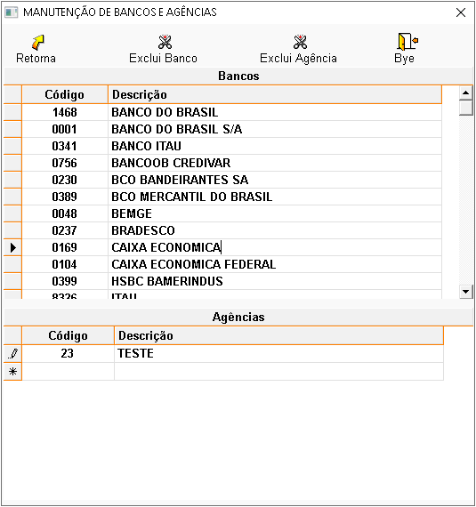

São instituições que negociam dinheiro e fornecem outros serviços financeiros. Os bancos aceitam
depósitos e
fazem empréstimos, obtendo lucro da diferença entre as taxas de juros pagas e cobradas. Aperte no topico
que deseja para conhecer a funcionalidade de cada opção.
+Qual o procedimento para cadastrar bancos / agências?
No sistema:
- Informe todos os campos pertinentes ao banco e tecle ENTER até a próxima linha para salvar o
cadastro.
- Selecione o banco cadastrado e em agência, informe o código e o nome da cidade na qual pertence a
agência, tecle ENTER para salvar.
OBS.: As informações sobre cada campo estão no final da página.
+Como alterar os dados de bancos / agências?
Selecione o banco ou agência, faça as alterações desejadas e tecle ENTER até a próxima linha para
salvar.
+É possível excluir bancos / agências?
Sim, mas deve-se atentar aos seguintes detalhes:
- Se existirem cheques associados a este banco ou agência, a exclusão não será permitida.
+Descrição dos campos de bancos / agências:

BANCO
- Código: Informe o código do banco.
- Descrição: Informe o nome do banco.
AGÊNCIA
- Código: Informe o código da agência.
- Descrição: Informe o nome da agência.